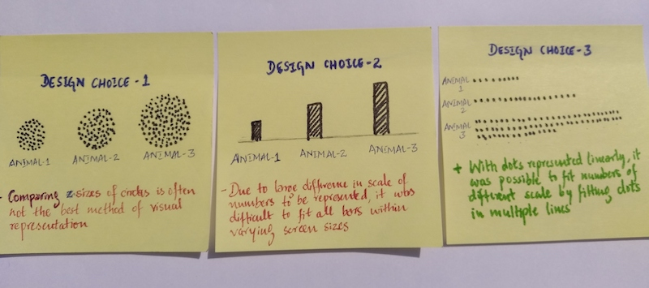

Putting in perspective, some of the largest and longest animal migrations in the world
January 2019
Facts presented with just numbers and statistics often does not help readers fully understand or appreciate them. With this in mind, this project aims at putting in perspective some of the largest and longest animal migrations on our planet. The population of migratory herds and the enormous distances covered by these herds will hopefully be appreciated much more when put it perspective with other facts which are relatable to most people.

The tiny arctic tern’s migratory distance of equivalent to flying twice around the planet is one of the true miracles of nature.
The long migration of dragonflies is made possible by upto four generations.
The entire migratory path of monarch butterflies will span multiple generations and their total population will be more than twice the population of Germany. The fact that this majestic journey is hampered by human civilisation and climate change should serve as a severe warning of the devastating impact of humans on other species of planet.
The project uses dots to represent the population of migratory herd with each dot representing certain ’N’ number of individuals. But due to different screen sizes of viewing devices, it is not possible to use the same ’N’. For example, the same graphic that covers the entire width of laptop will end up becoming too wide on a smartphone. And unlike other content, the size of d3js graphic cannot be set adaptively to the screen size. In order to overcome this challenge, the number of individuals represented by each dot ’N’ itself was changed adaptively based on the screen size of the viewing device.
The visualisation was inspired from Neil Halloran's The Fallen of World War II.